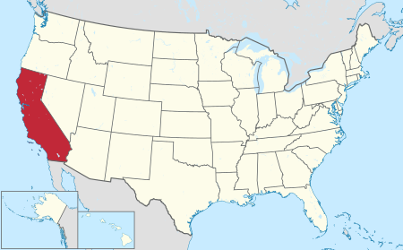

Калифорния

Калифорния — штат США, расположенный на западном побережье страны, на берегу Тихого океана.
Граничит с американскими штатами Орегон (на севере), Невада (на востоке) и Аризона (на юго-востоке), а также с мексиканским штатом Нижняя Калифорния (на юге).
Калифорния — 31-й штат США, он был образован 9 сентября 1850 года.
До этого Калифорния в разное время находилась под властью Испании и Мексики.
Калифорния — самый населённый штат США и 3-й по площади (после Аляски и Техаса).
Столица — Сакраменто, крупнейший город — Лос-Анджелес. Другие крупные города: Сан-Франциско, Сан-Диего, Сан-Хосе.
Штат известен своим разнообразным климатом, пёстрым составом населения. Калифорния занимает 1-е место среди штатов США по объёму ВВП.
Важнейшие отрасли экономики штата — информационные технологии, аэрокосмическая индустрия, добыча и переработка нефти, шоу-бизнес, сельское хозяйство.
Население
 Калифорния является самым населённым штатом США (12 % общего населения), по результатам переписи населения 2000 года в Калифорнии проживало 33 871 648 человек, по оценке 2008 года — 36 756 666 человек, а по оценке 2014 года — 38 340 000 человек.
Только лишь в округе Лос-Анджелес, самом населённом из всех округов США, проживает более 9 800 000 человек (42 штата США обладают меньшим населением).
Калифорния остаётся самым населённым штатом и у миллиардеров: 79 человек из списка «Forbes» «400 богатейших американцев 2006» живут в Калифорнии.
По состоянию на 2010 год в Калифорнии проживает 663 тыс. миллионеров.
Калифорния является самым населённым штатом США (12 % общего населения), по результатам переписи населения 2000 года в Калифорнии проживало 33 871 648 человек, по оценке 2008 года — 36 756 666 человек, а по оценке 2014 года — 38 340 000 человек.
Только лишь в округе Лос-Анджелес, самом населённом из всех округов США, проживает более 9 800 000 человек (42 штата США обладают меньшим населением).
Калифорния остаётся самым населённым штатом и у миллиардеров: 79 человек из списка «Forbes» «400 богатейших американцев 2006» живут в Калифорнии.
По состоянию на 2010 год в Калифорнии проживает 663 тыс. миллионеров.
| Расовый состав |
1970 |
1990 |
2000 |
2010 |
| Белые американцы |
89% |
69% |
59,5% |
57,6% |
| Неиспаноязычные белые |
76,3% |
57,2% |
46,7% |
40,1% |
| Азиаты |
2,8% |
9,6% |
10,9% |
13% |
| Афроамериканцы |
7% |
7,4% |
6,7% |
6,2% |
| Латиноамериканцы |
13,7% |
25,8% |
32,4% |
37,6% |